A space where ecology matters.
The installation01
An ephemeral architectural installation built from urban organic waste transformed into biomaterials. A shelter to rest, play, and reflect — a moment of stillness within the festival.
The shelter transforms a fragment of the festival into a living room for the commons: a soft landscape where architecture is not an object to admire, but an experience lived through the body and the senses. Inside the pavilion, artworks and collaborations with artists create moments of encounter and reflection.
The design02
A scaffold pavilion wrapped in a warm, tessellated bioplastic scale skin. Modular hexagonal flooring creates flexible seating and gathering zones beneath layered scales that filter the light.
The entire façade is made of biodegradable bioplastic panels, designed as part of the Green Cycle — safely returning to the natural cycle of matter at the end of the festival. Their colours come from natural pigments: turmeric for the warm yellows, and natural indigo leaves for the blues.
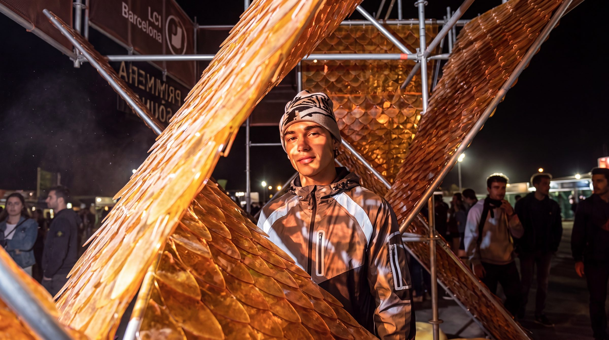
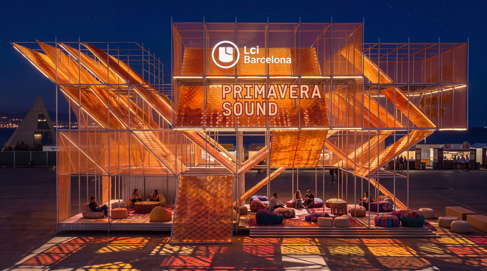
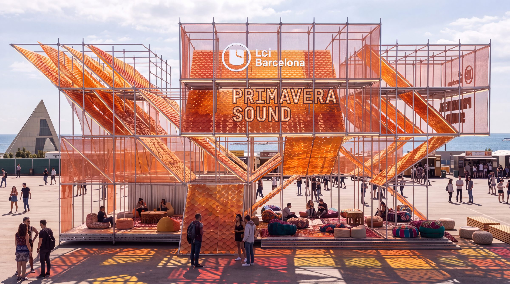
Colour proposalsScale panels
The woven bioplastic scales come in two proposed tones. Blue panels bring enhanced shade and UV protection to zones of high solar exposure; orange panels offer a warmer aesthetic with partial light transmission for comfortable interior conditions. Drag to compare across the pavilion.
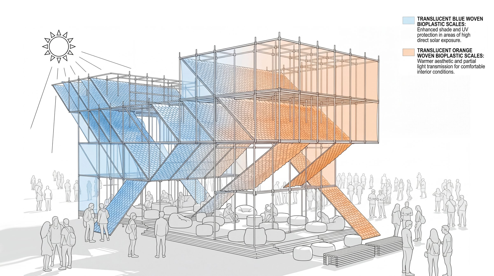
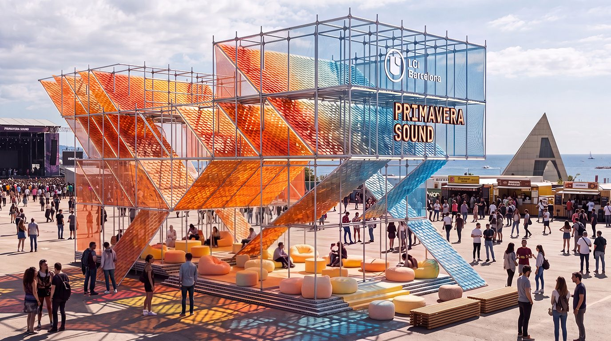
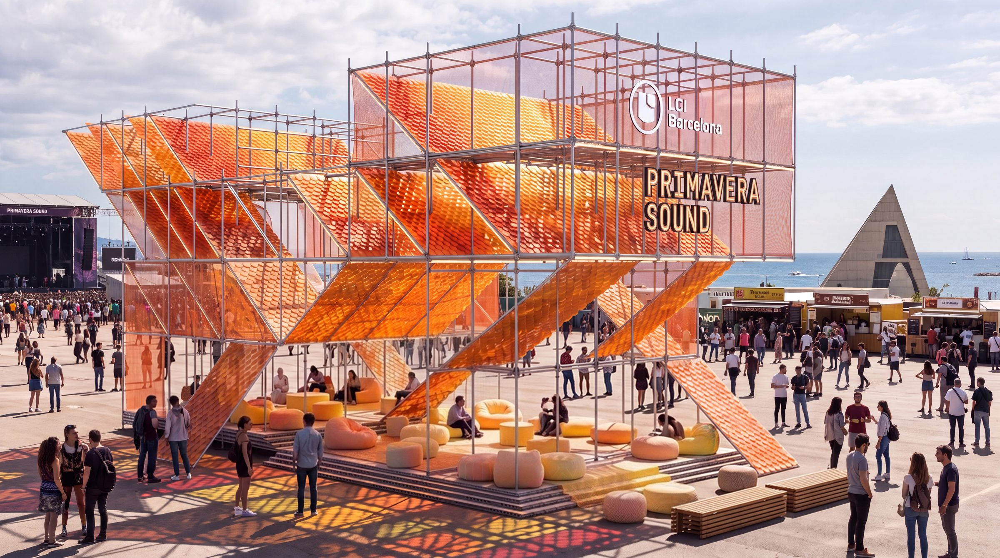
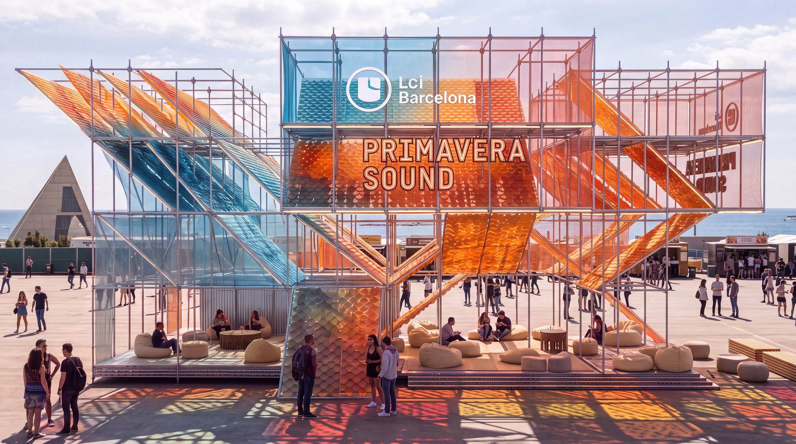
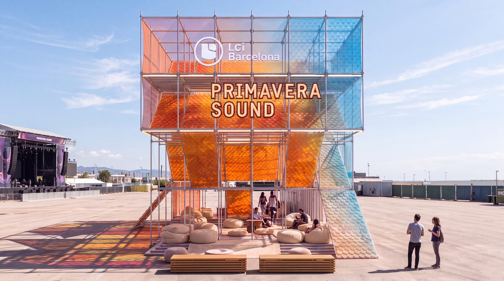
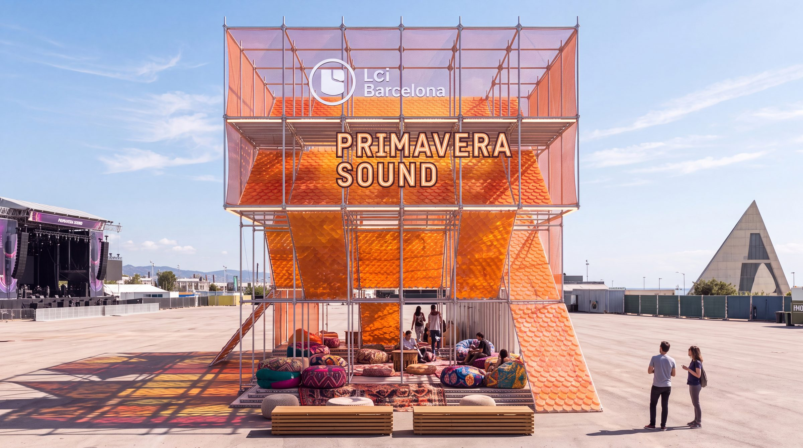
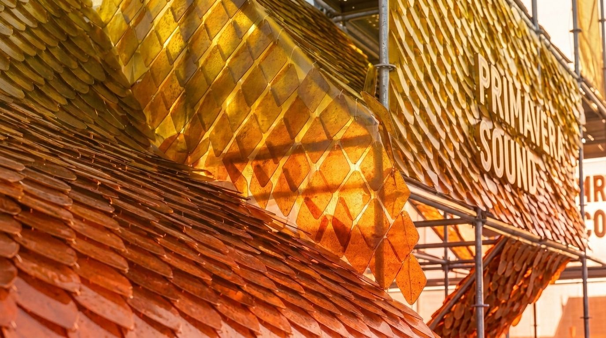
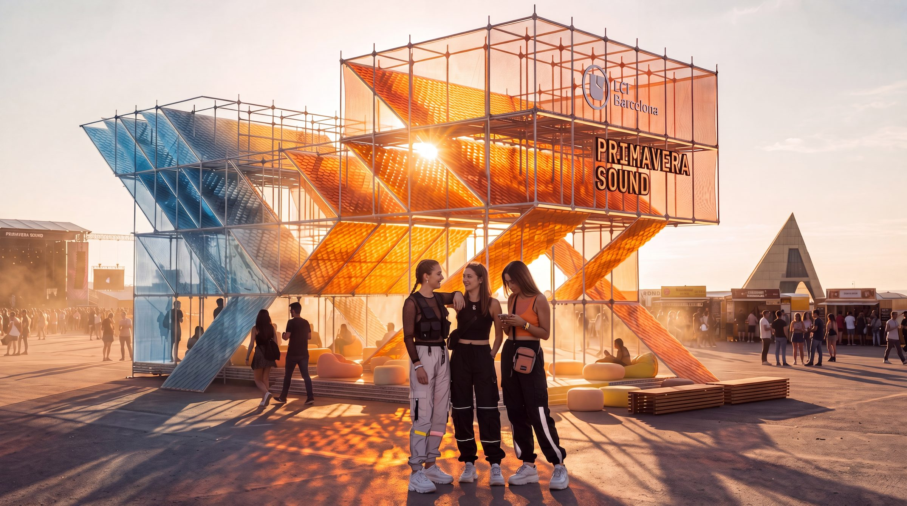
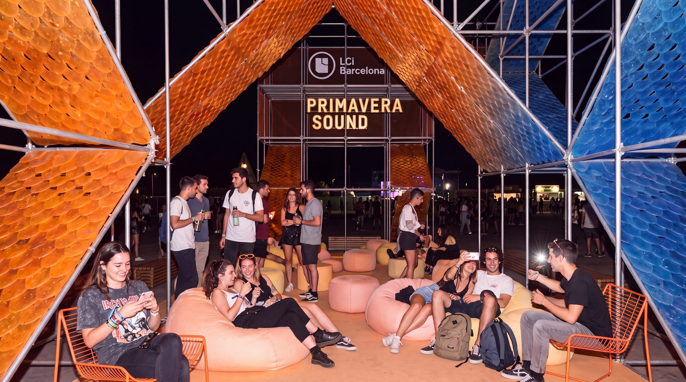
The groundFoundation
Ground mussel shells and calcium-rich eggshells cast into hexagonal tiles. This modular flooring system creates flexible seating zones without requiring adhesives or mechanical fasteners.
After the festival, all tiles return to composting. The hexagonal geometry echoes natural tessellations found in honeycombs and flower petals — biomimetic design as foundational principle.
Eggshell + Mussel · Green Cycle Material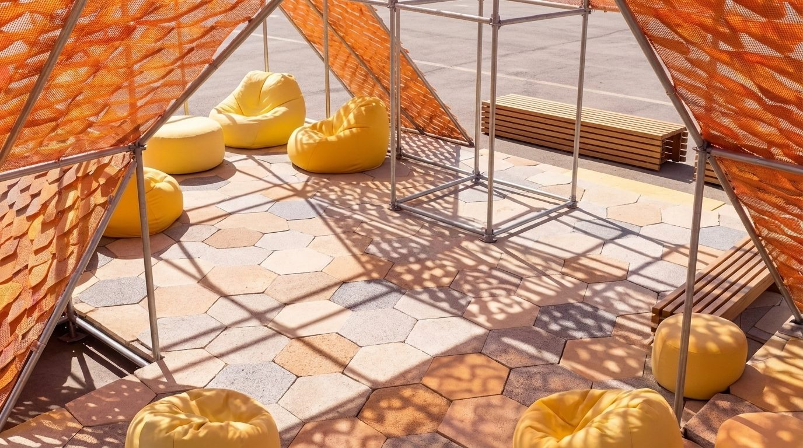
Biomaterials03
Four substances normally associated with waste or biology, transformed into surfaces of encounter and environmental storytelling.

Dense, dark, tactile tiles that carry the memory of every Barcelona morning.
Lignin & Cellulose
Mushroom root networks grown into lightweight, insulating structural forms.
Chitin (Polysaccharide)
Cast into translucent, jewel-like forms that catch and hold coloured light.
Collagen (Protein)
Ground and cast into hexagonal tiles that filter light and create acoustic texture.
Calcium CarbonateInside the pavilionArt & Collaboration
To foster engagement and purpose in the project through artistic interventions. To communicate the values of the pavilion and the festival through art, generating an experience of elevation, reflection, and respect for the space and its surroundings.

"Lo importante no es lo que se ve, sino lo que sucede entre las personas."
— Rirkrit Tiravanija
We understand art as a tool for understanding and reformulating our visual and conceptual language, as well as our relationship with time. Just as Primavera Sound has established itself as one of the most relevant music festivals of our era, we propose inviting artists whose practices reflect this cultural relevance — creating a space where the audience can perceive themselves and relate to one another in a different way, through experience, knowledge, and perception.
Through the use of natural materials, the project proposes a radical gesture of extraordinary impact: a place where people can pause, feel, and experience possible futures from the present.
A space conceived to breathe deeply and inhabit time from another dimension — a positive act of renewal that invites us to slow down in order to keep going. An experience that opens the possibility of reconnecting with oneself, with others, and with one's surroundings.
Two metabolisms04
Encounters aligns with the UN 2030 Agenda, showing how temporary architecture, art, and material innovation can support a circular and regenerative future. Conceived as a climate refuge, it provides shade, reduces heat exposure, and creates a comfortable environment while encouraging more sustainable ways of inhabiting public space. As a participatory artwork, it also fosters dialogue, collective imagination, and ecological awareness — highlighting the role of culture in accelerating the transition toward more regenerative societies.
Design for Disassembly. The modular scaffold structure is assembled, dismantled, repaired, and reused, keeping materials in continuous circulation and reducing resource consumption.
Design for Benign Reintegration. The bioplastic façade is made from renewable bio-based materials that safely biodegrade at the end of their life cycle, returning to nature as nutrients.
Inside the festival05
Encounters approaches climate adaptation not merely as a technical challenge, but as a cultural, artistic, and emotional one. Conceived as a climate refuge, it provides shade, reduces exposure to the sun, and creates moments of thermal comfort amid the intensity of the festival environment.
At the same time, it functions as a sensory refuge. Through filtered light, tactile biomaterials, evolving textures, natural colours, contemplative spaces, and playful areas, the installation fosters an atmosphere where visitors can step away from overstimulation and reconnect with slower, more mindful ways of experiencing their surroundings.
Here, well-being is understood as a collective and multidimensional condition. Comfort is not defined solely by temperature; it is equally emotional, social, and sensory.
Material research06
Real samples, real experiments. Every material was tested and documented in the workshop before becoming part of the shelter.

Orange peel scale skin — overlapping tessellation

Orange peel — modular woven mat

Graphic Lab — bioplastics workshop

Documentation Card — material test card

Workshop — bioplastics recipes

Hexagonal mold prototypes

Wet Coffee + Gelatine — Experiment G26

Eggshell + mussel composite — hexagonal tiles

Composite tile — granular texture detail

Composite tile — colour variation

Coffee + eggshell sample

Coffee + eggshell surface test

"Made entirely out of bio materials"

Bioplastic structural test forms

Bioplastic form — structural test variant

Bioplastic — surface texture close-up

Orange Bioplastic — perforated lattice panel

Orange Bioplastic — translucency test

Orange Bioplastic — flexibility test

Blue Bioplastic — cellular network membrane

Blue Bioplastic — cell structure detail

Blue Bioplastic — light transmission test

Green Bioplastic — turmeric + indigo blue

Green Bioplastic — pigment variation

Green Bioplastic — surface test

Red Bioplastic — flexible translucent slab

Red Bioplastic — colour & flex detail
Sustainability protocol07
Architecture is a process, not a product. Nature teaches us that everything in an ecosystem has a certain duration — and that the exchange of energy and matter with the environment is crucial for its development.
Inspired by the Japanese Metabolism movement of the 1950–60s, this project questions time, not only space.
"Yes, perfect as a constant process of change. The impermanent beauty, the immaterial beauty."— Kisho Kurokawa
Material Lifespan
The Green Cycle allows organic matter to return safely to the earth through composting and natural degradation. Materials in this cycle are designed to re-enter nature without contaminating it.
The shelter's biomaterial skins — mussel shells, eggshells, coffee grounds, orange peels — are all Green Cycle materials.
Material Types
The Blue Cycle ensures that structural elements remain modular, traceable, and reusable over time. Technical materials don't die — they circulate indefinitely in the technosphere.
Each time a material is reused, its embodied energy is reduced by up to 50%.
Strategies
Eliminating the concept of waste means designing from the beginning with the understanding that there is no waste — only nutrients. The nutrients themselves determine the design.
"Building is a natural function. All constructive activity has as a framework nature."— Ken Yeang
Two Metabolisms
What we stand for08
A proposalPrimavera Sound 2027
Redefining how urban festivals activate public space with circular materials and collective care. Reducing dependence on fossil-based materials while engaging communities in sustainable practices.
A scalable, replicable framework for the future of cultural infrastructure.
A final noteAlternative concept
As a final note, we'd like to share a completely different concept: Refugio Sensorial. It follows a distinct direction from everything we've presented so far — a low-stimulation lounge of woven fibre and soft texture, built purely for acoustic and sensory rest.
We include it here as an alternative, in case this direction resonates more. It could equally live inside Encounters itself, as a dedicated sensory-refuge feature within the pavilion.
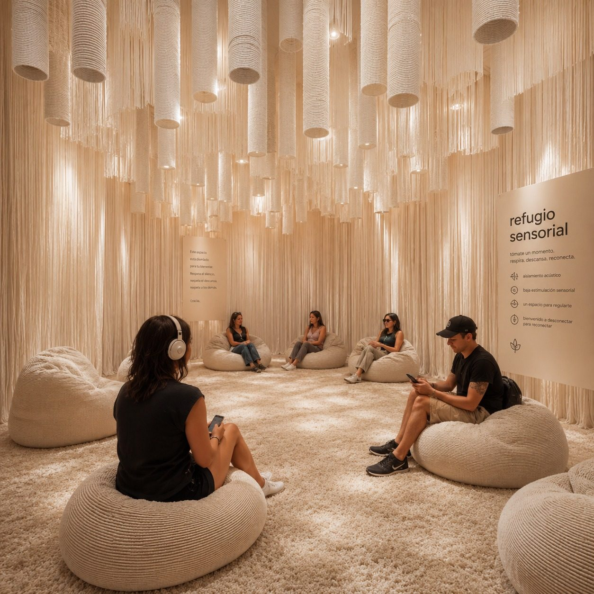